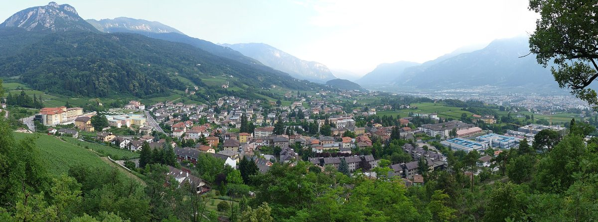

이탈리아 BIM 아디제 트렌토 컨소시엄, 소속 지자체의 재생에너지공동체 가입에 7만 유로 지원…새 조직 대신 기존 공동체 합류만

105개 지자체 연합, 가입 초기 비용으로 지자체당 5,000유로에 대표 지자체를 정하면 1,500유로 더 줘…2023~2025년 같은 지원엔 20곳 참여, 트렌티노 운영 중 CER은 30곳
이탈리아 트렌티노 지역의 산지 유역 지자체 연합인 BIM 아디제 트렌토 컨소시엄(Consorzio BIM Adige Trento)이 소속 지자체가 재생에너지공동체(CER)에 가입하는 데 쓰도록 모두 7만 유로를 내놓았다. 지원금은 지자체당 5,000유로이고, 여러 지자체가 대표 지자체를 정해 함께 들어가는 경우에는 1,500유로를 더 얹어 가입 초기 비용을 덜어 준다. 다만 돈은 이미 운영 중인 CER에 들어가는 경우에만 주고 새 조직을 세우는 데는 주지 않는데, 넓고 탄탄한 지역 기반을 갖춘 공동체라야 사회·환경·경제적 이익을 지역에 돌려줄 수 있다는 판단에서다. 컨소시엄은 2023~2025년에도 같은 지원을 했고, CER 시행령이 2024년 1월 24일에야 발효될 만큼 제도가 불확실했던 그 시기에 소속 지자체 20곳이 지원을 받았다. 미켈레 본템펠리(Michele Bontempelli) 회장은 트렌티노에서 운영 중인 CER이 30곳이라고 소개하며 "CER의 미래는 협력과 통합에 있다"고 말했다. 105개 지자체가 속한 이 컨소시엄은 태양광 사업으로 시작해 자체 CER을 세운 데 이어 이번 지원으로 에너지 전략을 넓히고 있다.
시민에너지 관점
유럽연합은 2018년 재생에너지지침(RED II)으로 회원국에 재생에너지공동체 제도를 만들도록 했고, 이탈리아의 CER은 그 흐름 위에 서 있다. 작은 산골 지자체가 공동체 운영까지 떠안기는 버겁다는 걱정이 나올 수 있지만, 이번 지원은 각자 새 조직을 차리는 대신 이미 돌아가는 공동체에 합류하게 해 그 짐을 나누는 방식이다. 지자체가 주인 노릇을 독차지하지 않고 주민·기업과 같은 공동체의 한 구성원으로 들어가야, 전기에서 나온 이익이 행정 예산이 아니라 마을 살림으로 돌아온다. 국내에서도 지자체 협의체나 광역 정부가 주민 주도 에너지공동체에 지자체가 참여할 수 있도록 초기 비용과 절차를 먼저 지원해야 한다.
출처: Vita Trentina 2026-11-04 Giovanni Melchiori 원문 보기
イタリアのBIMアディジェ・トレント・コンソーシアム、加盟自治体の再生可能エネルギー共同体への参加に7万ユーロ支援…新組織ではなく既存共同体への加入に限定
105自治体の連合、加入初期費用として自治体ごとに5,000ユーロ、代表自治体を定めれば1,500ユーロを上乗せ…2023〜2025年の同様の支援には20自治体が参加、トレンティーノで稼働中のCERは30
イタリア・トレンティーノ地方の山間流域自治体の連合であるBIMアディジェ・トレント・コンソーシアム（Consorzio BIM Adige Trento）は、加盟自治体が再生可能エネルギー共同体（CER）に加入する際に使えるよう、総額7万ユーロを用意した。支援金は自治体ごとに5,000ユーロで、複数の自治体が代表自治体を定めて一緒に加入する場合は1,500ユーロを上乗せし、加入初期の費用を軽くする。ただし支援はすでに稼働しているCERに加わる場合に限り、新しい組織を立ち上げる場合には出さない。広く強固な地域基盤を持つ共同体でなければ、社会・環境・経済面の利益を地域に還元できないという判断からだ。コンソーシアムは2023〜2025年にも同様の支援を行い、CERの施行令が2024年1月24日にようやく発効するほど制度が不確かだったその時期に、加盟自治体20カ所が支援を受けた。ミケーレ・ボンテンペッリ（Michele Bontempelli）会長は、トレンティーノで稼働中のCERは30あると紹介し、「CERの未来は協力と統合にある」と述べた。105の自治体が加盟するこのコンソーシアムは、太陽光事業から始めて独自のCERを設立し、今回の支援でエネルギー戦略をさらに広げている。
市民エネルギーの視点
欧州連合は2018年の再生可能エネルギー指令（RED II）で加盟国に再生可能エネルギー共同体の制度づくりを求め、イタリアのCERはその流れの上にある。小さな山間の自治体が共同体の運営まで抱えるのは荷が重いという懸念もありうるが、今回の支援はそれぞれが新しい組織をつくる代わりに、すでに動いている共同体に加わることでその負担を分け合う方式だ。自治体が主導権を独占せず、住民や企業と同じ共同体の一員として加わってこそ、電気から生まれる利益が行政の予算ではなく地域の暮らしに戻ってくる。韓国でも自治体の協議会や広域自治体が、住民主導のエネルギー共同体に自治体が参加できるよう、初期費用と手続きをまず支援すべきだ。
出典: Vita Trentina 2026-11-04 Giovanni Melchiori 原文を読む
意大利BIM阿迪杰-特伦托联合体拨款7万欧元支持成员市镇加入可再生能源社区，只支持加入现有社区而非新建组织
由105个市镇组成的联合体为加入初期费用每个市镇提供5,000欧元，确定牵头市镇的再加1,500欧元；2023至2025年同类支持有20个市镇参与，特伦蒂诺正在运营的CER有30个
意大利特伦蒂诺地区的山区流域市镇联合体BIM阿迪杰-特伦托联合体（Consorzio BIM Adige Trento）拿出总计7万欧元，供成员市镇加入可再生能源社区（CER）时使用。每个市镇可获5,000欧元，多个市镇确定牵头市镇共同加入的，再追加1,500欧元，用于减轻加入初期的费用。不过，资金只发放给加入已在运营的CER的情况，不用于新建组织，理由是只有拥有广泛而稳固地方基础的社区，才能把社会、环境和经济利益回馈给当地。联合体在2023至2025年也提供过同样的支持；在CER实施法令直到2024年1月24日才生效、制度高度不确定的那段时间里，有20个成员市镇获得了支持。会长米凯莱·本滕佩利（Michele Bontempelli）介绍说，特伦蒂诺目前有30个CER在运营，并表示"CER的未来在于协作与整合"。这个由105个市镇组成的联合体从光伏项目起步，随后成立了自己的CER，如今又通过这项支持进一步扩展其能源战略。
市民能源视角
欧盟在2018年的《可再生能源指令》（RED II）中要求成员国建立可再生能源社区制度，意大利的CER正是在这一潮流中发展起来的。有人可能担心小山区市镇难以承担社区运营，但这次的支持方式是让各市镇不必各自新建组织，而是加入已在运转的社区，从而分担这一负担。市镇不独占主导权，而是作为与居民和企业平等的社区成员加入，电力带来的收益才会回到地方生活，而不是行政预算。韩国也应由地方政府协议体或广域政府率先支持初期费用和程序，让基层政府能够参与居民主导的能源社区。
来源: Vita Trentina 2026-11-04 Giovanni Melchiori 查看原文
Italy's BIM Adige Trento consortium offers €70,000 to help member municipalities join renewable energy communities, but only existing ones
The union of 105 municipalities gives €5,000 per municipality towards start-up costs, plus €1,500 where a lead municipality is named; 20 took part in a similar scheme in 2023-2025, and 30 CERs are operating in Trentino
The Consorzio BIM Adige Trento, a union of mountain-basin municipalities in Italy's Trentino region, has set aside a total of €70,000 for member municipalities that want to join a renewable energy community (CER). Each municipality can receive €5,000, with an extra €1,500 where municipalities name a lead municipality to join together, to cover start-up costs. The money is only available for joining a CER that is already operating, not for setting up new bodies, on the view that only well-structured communities with broad, strong local roots can pass social, environmental and economic benefits on to the area. The consortium ran a similar scheme in 2023-2025, when 20 member municipalities took part at a time of great regulatory uncertainty, with the implementing decree on CERs coming into force only on 24 January 2024. President Michele Bontempelli noted that 30 CERs are now operating in Trentino and said that "the future of CERs lies in synergy and integration." The consortium, which has 105 member municipalities, began its energy strategy with a solar project, went on to set up its own CER and is now extending that strategy with this measure.
Citizen Energy View
The European Union's 2018 Renewable Energy Directive (RED II) required member states to create a framework for renewable energy communities, and Italy's CERs grew out of that. Some may worry that small mountain municipalities cannot take on the running of a community, but this scheme shares that burden by having them join communities that already work rather than each starting a new body. Only when a municipality joins as one member of a community alongside residents and businesses, rather than monopolising control, do the returns from electricity flow back into local life instead of the administrative budget. In Korea, too, associations of local governments and provincial authorities should first support the start-up costs and procedures that would let municipalities join resident-led energy communities.
Source: Vita Trentina 2026-11-04 Giovanni Melchiori Read the original